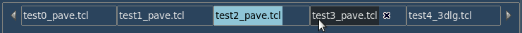
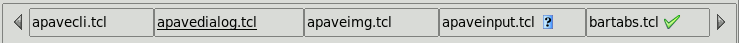
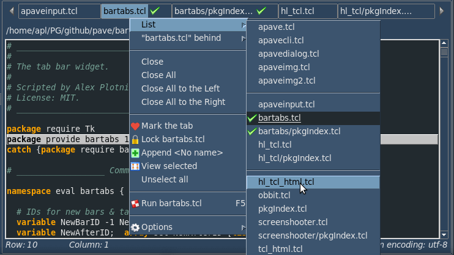

Table of Contents
What is this
The bartabs package provides Tcl/Tk widget containing tabs that are
- selectable and multi-selectable
- scrollable
- markable
- moveable
- closeable
- configureable
- static or changeable
- enhanceable with popup menu
If you need a Tcl/Tk widget similar to the tab bars of those editors, you might try bartabs.
The bartabs is highly configureable widget having a lot of options.
The bartabs can be used as an independent widget or along with apave package as bts widget. The latter case is presented by its demo (30 Mb), its code (test2_pave.tcl) being a good example of bartabs usage.
Introduction
A common appearance of bartabs is below:

Here the details are:
- the current file is test2_pave.tcl
- its full name is displayed by a caller of bartabs
- currently hovered file is test_pavedialog.tcl
- its name is shortened, with the -lablen 16 option
- so, its tail name is displayed by bartabs in a tooltip
- it has Close button at the right
- Scroll left and Scroll right buttons are at both edges of bartabs
- Scroll right button is disabled, as no tabs are behind the right edge
A bit customized versions of bartabs may look like the following:

Here the details are:
- a color scheme is changed
- the hovered tab has no tooltip, as its label isn't shortened
- Scroll right button is enabled, as two tabs were scrolled right

Here the details are:
- tabs have no border due to -bd 0 option
- bartabs got -static yes option, so the tabs have no Close buttons

Here the details are:
- bartabs is made -static no -bd 1 again
- currently edited file is underlined, instead of blue background
- some tabs are marked with magenta foreground, meaning "modified" (or similar)

Here the details are:
- bartabs got -imagemark option, so the tabs are marked with an image
- if not marked or hovered, the tabs can show its own images

Here the details are:
- tabs can be multi-selected, with Ctrl+Click or a menu action
- thus, the caller of bartabs can handle the batch of tabs

Here the details are:
- handlers can be called using the hot keys or the popup menu bound to bartabs
- by default, menu actions include: 1) choosing a tab 2) moving a tab 3) closing tab(s)
- list of tabs has three separated tab lists: invisible at left, visible, invisible at right
- a tab can be moved with drag-and-drop or with "Put ... behind" menu action
- static (-static yes) bartabs has no actions except for choosing a tab
- even for static bartabs, its caller can provide additional menu actions and submenus
Calling bartabs
The commands to call bartabs are actually as simple as:
after idle [list ::NS::fillBarTabs $wframe]or
update ::NS::fillBarTabs $wframewhere:
- fillBarTabs is a caller that should create the bar(s) of tabs and call a procedure of ~~~ to show the bar(s); there are a few of such procedures
- wframe is a path to a parent widget that should hold bartabs, most likely a frame
The main problem to resolve at the calling bartabs is a definition of its width. Though, if it's called first time, it may contain only one "empty" tab which would hardly be a problem.
But when the bartabs is called with a batch of tabs (they may be fetched from a previous saved session), it should be supplied with a maximum of bar width to place the tabs. In general, only a part of tabs can be placed on the bartabs, as its width is usually restricted by another widget, mostly by a contents editor (text, layout, picture, map etc.).
Theafter idle allows to call bartabs at the moment when the restricting widget is highly likely updated, so that ~~~ can get its geometry and calculate a room to hold the tabs. Having done this calculation, bartabs would place on the bar as many tabs as its room allows.
The described below -wbase and -wproc options allow to calculate the width of bartabs dynamically at resizing widgets:
- -wbase sets a path to widget whose width would define the width of bartabs; in most cases its length would equal to the length of bartabs
- -wproc sets a procedure that can perform more complex calculation to get the width of bartabs
So then, the fillBarTabs procedure creates the bartabs widget. It usually contains a code similar to:
# make a list of main options
set bar1 [list -wbar $wframe -wbase .somepath \
-csel {NS::selTab %t} -cdel {NS::delTab %t} \
-menu [list sep "com {New tab...} {NS::addTab %b}"]
# add tabs' labels
foreach l $labels {lappend bar1 -tab $l}
# create bar of tabs
set NS::barID [bts::bar_Create $bar1]
# set $label1 as a current tab
bts::tab_Show [bts::tab_IDbyName $NS::barID $label1]]
Bolded are the procedures of bartabs creating and showing the bar of tabs.
The application can create and handle as many bartabs widgets as required. Each bar widget has a unique positive integer ID and most procedures of bartabs take it as the first argument.
Also, each tab has its own unique ID that identifies it among all tabs of all bars. The renaming or moving a tab doesn't change its ID.
The tabs inside a bar should have unique names. If some names are going to be equal you can supply them with prefixes or suffixes, sort of "subdir/", "(2)", "(copy 1)" etc. All the same, they should be distinguished internally, at least with their tab IDs. The bts::tab_IDbyName procedure helps not only to get a tab's ID by its label, but also to define if a label exists in a bar (returning -1 if not).
The interface procedures of bartabs handle bars and tabs, so that their names are prefixed with bar_ and tab_.
The main procedure is naturally bts::bar_Create. It can take much more options than presented in the example. All of these are described below.
Options
Everywhere below barID means a bar's ID, tabID means a tab's ID. These are unique identifiers of bars and tabs available:
bts::bar_Create procedure at creating a barbts::tab_IDbyName procedure
The options of bts::bar_Create procedure are following.
| Option | Description | Usage |
|---|---|---|
| -wbar | parent widget of the bartabs widget | it's obituary option:-wbar .win.framain.frabts |
| -tab | label of tab it must be unique throughout a bar | -tab {First item} -tab {Second item} |
| -wbase | base widget whose width defines the width of the bartabs widget | in most cases, this option suffices to define the width of bartabs at resizing widgets:
-wbase .win.editor |
| -wproc | Tcl/Tk code to get the bartabs' width the option can include %b to be replaced with barID | the option can be as simple as following:
-wproc {winfo width .win.mframe.text1}
or more complex:
proc NS::btsWidth {barID w1 w2} {
if {[bts::bar_Exists $barID]} {
set bl [expr {[winfo width $w1]-[winfo width $w2]}]
if {$NS::condition} {incr bl [$NS::proc $barID]}
return $bl
}
return 0
}
set NS::barID [bts::bar_Create -wbar $wbar \
-wproc {NS::btsWidth %b $wmain $wleft} -tab Noname] |
| -static | disables closing and moving the tabs by bartabs | by default:-static no |
| -hidearrows | hides the scrolling arrows instead of disabling them | by default:-hidearrows nouse this option carefully: it's mostly for bars with -static yes option |
| -scrollsel | if "yes", a current tab position is scrolled with the arrow buttons if "no" a left/right tab is scrolled with the buttons | by default:-scrollsel yes |
| -menu | list of additional popup menu items containing: 1) type goes first: c - command, m - cascade menu, s - separator 2) menu label 3) menu command or {} 4) submenu name or {} 5) disabling command or {} where the optional disabling command takes three arguments: barID, tabID, tab label and returns a list of maximum 4 items:
|
...
-menu [list \
s \
"c {Add
Here we have two disabling options: by a command ::NS::isDisableTab and by a list {0 imgSW {%l} Ctrl+B}.
Note: the disabling command must be fully qualified. |
| -tleft | index of left tab to display | by default:-tleft 0 |
| -tright | index of right tab to display | by default:-tright endi.e. as many tabs are displayed as the bar can hold |
| -csel, -cnew, -cmov, -cdel | command called at selecting/ inserting/ moving/ deleting a tab | the command should return "true" to enable the action; three placeholders may be set in the option value: %b - barID, %t - tabID, %l - label
for example: -cdel {NS::btsDel %b %t {%l}} |
| -fgmark, -bgmark | fore- and background of tabs marked with bts::tab_Markand unmarked with bts::tab_Unmarkwhich is controlled by the application e.g. to mark the modified tabs | by default:-fgmark #800080 -bgmark ""i.e. only foreground will be marked generally, this option depends on a color scheme in use |
| -fgsel, -bgsel | attributes for selection:
| by default:-fgsel "." -bgsel ""i.e. the colors are taken from [ttk::style configure .]
examples: 1) -fgsel white -bgsel red 2) -fgsel .main 3) -fgsel ""
generally, this option depends on a color scheme in use |
| -font | font attributes of tab labels | by default:-font [font configure TkDefaultFont] |
| -relief | relief of tabs | by default:-relief groove |
| -padx, -pady | padding of tab | by default: -padx 2 -pady 4 |
| -bd | border of tab (0 or 1) | by default:-bd 1 |
| -lablen | maximum of tab label's length0means no limit | by default:-lablen 0 |
| -tiplen | maximum of tooltips for scrolling arrows0means no limit; -1means no tips | by default:-tiplen 0 |
| -marktabs | list of marked tabs' IDs | this option can be used to save and restore the list of marked tabs:set savedmarks [bts::bar_Cget $barID -marktabs] ... bts::bar_Configure $barID -marktabs $savedmarks bts::bar_Draw $barID |
| -tabcurrent | ID of current tab; though many tabs may be selected with Ctrl+Click; only one tab is the current tab | by default:-tabcurrent -1i.e. no current tab, no related info bts::tab_Select, bts::tab_Show, bts::tab_SelList all deal with this option |
The bts::bar_Configure and bts::bar_Cget procedures are used to set and get the bar options. For example, you can run
lassign [bts::bar_Cget $barID -tleft -tright] tleft tright ... bts::bar_Configure $barID -tleft $tleft -tright $tright bts::bar_Update $barIDto show your tabs within the saved range.
There are also two analogue procedures bts::tab_Configure and bts::tab_Cget to set and get the tab options however few they are. Perhaps, only -text (the tab label's text) is worthwhile.
However, these bar_ and tab_ procedures may be useful to store and fetch your own options, i.e. any data related to your bars and tabs.
Also, there are two storing and restoring procedures:
bts::bar_Storestores a bar's data to a variablebts::bar_Restorerestores a bar's data from a variable
For details see Interface below.
User interface
Tips and hints
What's all those ... mean?